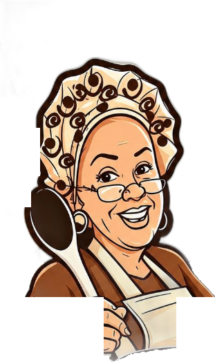

pão de queijo artesanal · são paulo
Feito com amor,
do jeito que vó faz
Crocante por fora, macio por dentro. Vendido congelado, pra você assar em casa e comer no seu tempo.

- 🧀 Queijos selecionados de verdade
- 🧊 Vendido congelado: pra você comer no seu tempo
- 💬 Pedido cai direto no caderninho da vovó
Cardápio da vovó
Toque no sabor, escolha a quantidade. Preço por unidade.
abrindo o forno…
Como preparar em casa
Direto do congelador, sem descongelar antes.
🌀 Airfryer
O jeito rapidinho: em poucos minutos está pronto, douradinho e crocante.
🔥 Forno
Demora um pouco mais, mas o resultado vale cada minuto.
A vovó envia o passo a passo certinho (tempo e temperatura) junto com o seu pedido.
Como funciona
- Monte o pedido aqui no site, do seu jeito.
- Ele cai no caderninho da vovó na hora, com seu nome e WhatsApp.
- Ela te chama pra combinar retirada ou entrega e o pagamento.
Quem faz
Receita de família e mão de vó: pão de queijo do jeito que tem que ser, feito em casa, em São Paulo, com queijo de verdade e carinho de sobra. Vai congelado no ponto certo pra assar aí e comer quentinho, no seu tempo.